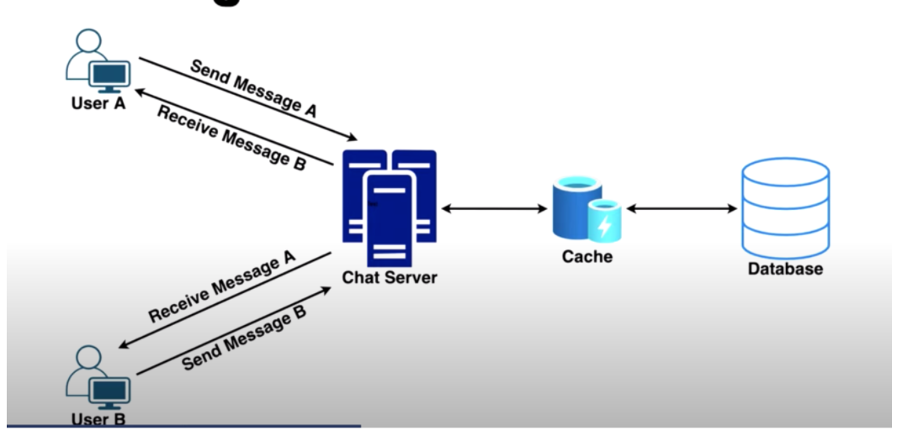
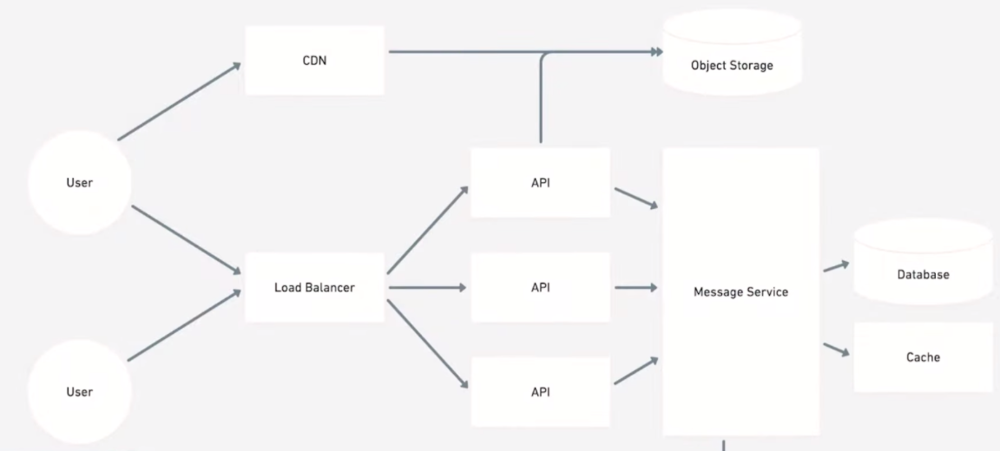
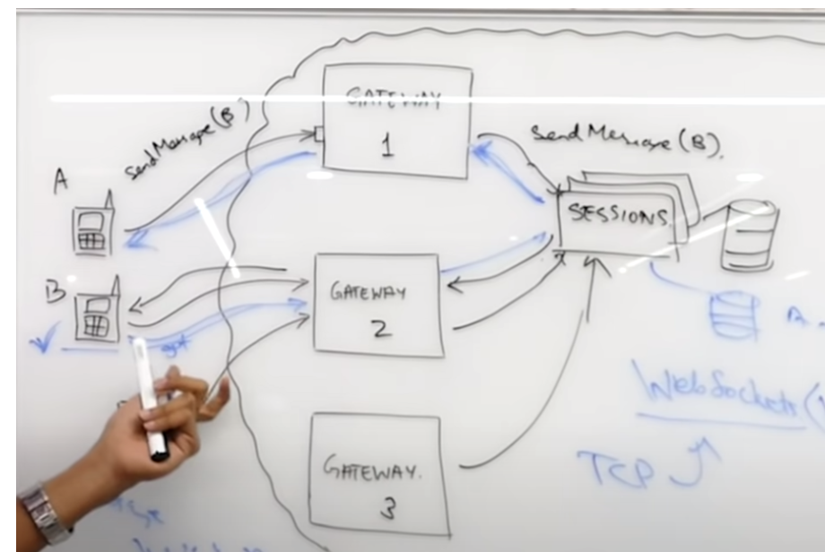
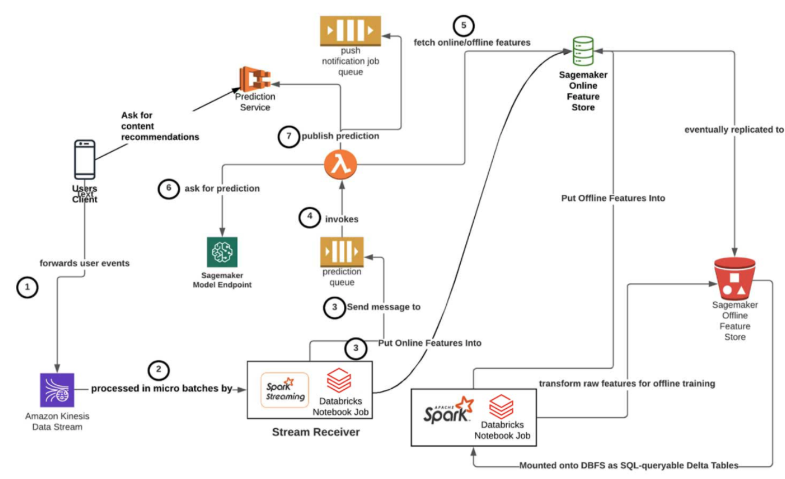
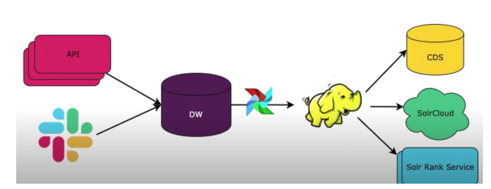
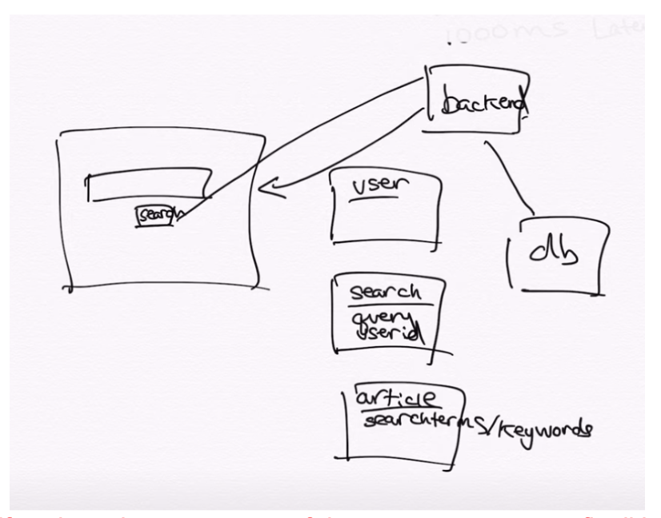
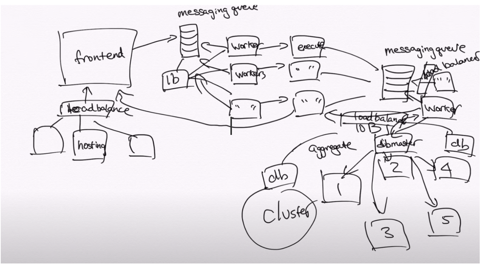
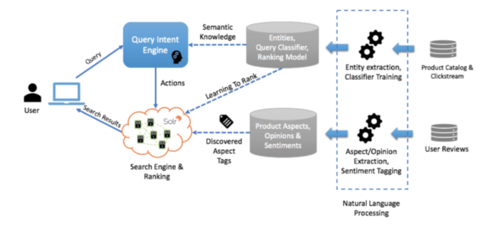

System Design
How to Approach a System Design
Step 1: Outline use cases, constraints, and assumptions
Who is going to use it?
How are they going to use it?
How many users are there?
What does the system do?
Step 2: Create a high level design
Step 3: Design core components
SQL or NoSQL
Database schema
Step 4: Scale the design
Load balancer
Horizontal scaling
Caching
Database sharding
Messaging Application
Key Features
One-on-one-chat and group chats between users.
Allow users to send text, pictures, videos and other files.
Store chat history.
Show the online/offline status of users.
Sent/delivered/read notifications.
Key Requirements
The service should be able to handle millions of users, with around >10B messages sent each day.
Real-time chatting with minimum latency.
The messaging service should be highly available, but consistency is of higher priority than availability in this case.
The system needs to be highly consistent. In other words, all users should see messages in the same order through any device they login from.
Server-Client Connection
Communication between the server and the client:
Long Polling and WebSockets.
Client communicates with service using HTTP - widely used protocol.
Receive Messages
Pull Approach
The receiving client periodically requests the server for any new messages.
The server maintains a queue of messages for the client and as soon as the client makes a get request, the server will send all the pending messages in the queue for that client.
To minimize delay in receiving messages, the receiving client needs to make requests to the server at a high frequency, even if many of these requests are returned with no new messages for the client.
With requests and responses at such high frequencies sent for each client, the system will ask for a lot of resources, making it infeasible for a messaging app.
Push Approach
The active clients will maintain a connection with the server in the form of a thread or a process and will wait for the server to deliver them any new messages that appear for the client through that open connection.
Since the server immediately relays all incoming messages to the clients, the server will not need to handle any pending messages and the overheads involved in establishing a new connection will be eliminated.
This approach lowers the latency to a minimum, allowing for a faster chat between clients, which is exactly what we want in your messaging system.
Note: push approach is a more fitting option since it involves minimum resources and minimum latency.
Storing Online/Offline Status
Users’ statuses are also stored in addition to messages.
However, status is just the memory cache.
To know if the user is online or offline or when the user was ‘Last Seen’, we need a heartbeat that the online users periodically send to the server.
The server continues updating the heartbeat timestamp in a table stored in the memory cache.
All the active users will have an entry in this table with a timestamp value against their user ID.
For example if user B wants to know A’s status, the server can read A’s timestamp in the table to check if he/she is online or offline and display it to B.
Send/Receive Notification
A sends a message for B via a server.
Because the connection will follow some messaging protocol, for example TCP, an acknowledgment will be sent to A when the server receives the message.
The server sends the message to the database for storage and also to the open connection for user B.
When user B receives the message, it sends an acknowledgment to the server.
The server sends a notification to A that the message has been delivered to B.
This is the delivered notification as shown in the chat or channel.
As soon as B opens his/her phone and sees the message, an acknowledgment will need to be sent to the server.
Now, this acknowledgment does not need to be sent to the same server through which the message was sent.
The read notification may be treated as an independent message with a unique message ID.
The notification will be sent over a server to A. and A sees this message as let’s say double blue tick.
Group Chats
Each group chat is considered as a unique object and is assigned a GroupChatID.
If user A sends a message in a group with 1 as the GroupChatID. The load balancer will look up the server that handles group 1 and sends the message to that server.
The server has a service that handles group messages and it queries this service for the other users that are also a part of the group chat.
The group service maintains a table that stores all the members of each GroupChatID as you can see in the picture.



Online Learning

Search and Ranking (Slack)
Ranking of candidate results from input query (TFIDF, Word2Vec)
Things to think about when ranking:
If a user shares channels/interactions with specific authors, give them higher rankings.
We can rank by actions like number of replies, reactions, or recency
Method
Feature Engineering
Security: Can’t leak any information across companies/channels/etc.
To help account for this, we can create non-private attributes.
Example: is user ‘A’ a member of channel XYZ?
“Work Graph”
Affinity between searcher and author/channel
Message-level engagement stats
Some might be more frequently engaged with
Search-specific engagement rates
Text Features
Recency
Solr Signals
Offline and updates to the Solr Rank Service
Labels (e.g. Relevance or Ranking)
API sends results of queries and other logs to storage
Capture metrics like whether or not the user clicked or engaged with the candidates returned from the search results (relevance or click rate).
Data is sent to a Data Warehouse with Airflow job to join data
Model Training
Model: XGboost
Single Model:
Does not train a model per team (very sparse; won’t work on small teams; not enough data).
Success Metrics
Clicks alone might be difficult to determine success (could mean different things) Add surveys using Slack bots to determine if the returned results provided what they were looking for.
Evaluation
Updates to the rankings are performed offline and evaluated by:
Mean reciprocal rank
Mean average precision
Generally works well with online data
Perform A/B testing
Control/Treatment,
Statistical Power (how many users do we need to get statistical power).
Online Architecture

Offline Architecture
Predicting User Engagement (Slack)
The engagement problem is formulated as a
logistic regressionusing features such as summary statistics capturing information about the message’s author, content, channel, reactions, and interactions.The output of the regression is a vector of feature weights that can be fed into the logistic function to produce values between
0 and 1.We can interpret these values as the probability of a given message triggering a particular engagement from a particular user.
Features: view time, clicks, time since following channel, #hashtags, tagging, file/content uploads, engagement with other users, user/author meta info.
Affinity Scoresas FeaturesTo predict the likelihood that a user engages with a message, we employ a measure of the user-to-author affinity (defined roughly as the general propensity of the user to read the author’s messages) as well as a measure of the user’s priority for the channel in which the message was posted.
In addition, we create personalized features for each class of message engagements, weighted by the affinities of the users who engaged.
These features allow the model to capture predictive signals like people being more likely to reply to a message that several close colleagues have already replied to.
Class imbalance: Since most users engage with only a tiny fraction of the messages they see in Slack, we’re faced with a class-imbalance when training our regression model.
To combat this problem, we employ a number of proven techniques.
We use
stratified samplingto create training sets, picking an engaged message from a channel and then selecting a fixed number of unengaged ones from the surrounding conversation to preserve a fixed ratio of positive to negative examples.
Relevancy
Relevancy, but after trying a few different proxy metrics, we ultimately settled on an approximation of time spent in channel based on read and write activity.
Search Engine
Database Schema
Tables:
User: UserID/TimeStamp
Search: Query/UserID
Articles/Docs: SearchTerms/Keywords

Note
Scaling: if we have large amounts of documents, we cannot fit all in one database and will need to shard the documents.

Learn to Rank (Wayfair)
Company uses LTR coupled with machine learning and natural language processing (NLP) techniques to understand a customer’s intent for queries.
Extract text information from different datasets including user reviews, product catalog, and clickstream.
Next, we can use a variety of NLP techniques to extract entities, analyze sentiments, and transform data.
Then feed the results into a microservice to identify user intent on a large portion of incoming queries.
When the Intent Engine can’t make a direct match, they use the keyword search model.
